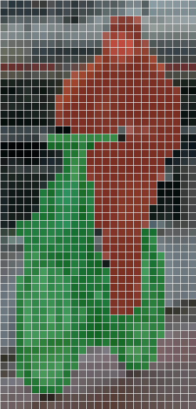

Green box: drawn by hand (the truth). Orange: YOLOv8n's box for the same cyclist. Slide it away — at about a third of the width it stops being a hit.
A · Tasks & metrics
Right, wrong, missed: TP, FP, FN
YOLOv8n, every box with score ≥ 0.25 · green TP 7 · red FP 4 · yellow dashed FN 5 (of 12 people drawn by hand)
Match each box, best score first, to a person not yet matched with IoU ≥ 0.5:
TP — a box on a real person. FP — a box on nothing, or a second box on someone already found. FN — a person no box found.
Here: the four FP are second boxes on cyclists already found; the misses are the three tiny walkers on the left and two people in the group on the right.
A · Tasks & metrics
Precision and recall pull against each other
$$P=\frac{TP}{TP+FP}\qquad R=\frac{TP}{TP+FN}$$
Precision: of the boxes, how many are right. Recall: of the people, how many were found.
Raise the threshold: fewer, surer boxes — P up, R down. The area under the whole curve is average precision (AP = 0.76 here); mAP averages it over classes.
Session 4, slide 19: measure on a test set the model never saw — and the same data for every model you compare.
A · Tasks & metrics
Non-maximum suppression: one box per object
Before NMS, YOLOv8n gives 62 person boxes with score ≥ 0.25 — several on each cyclist.
take the highest-scoring box left — keep it;
remove every box with IoU > 0.5 against it;
repeat until none are left.
A · Tasks & metrics
Which metric fits your project?
Missing is costly → recallA tumour screen, a person on a level crossing: a lower threshold, and a human checks the extra boxes.
False alarms are costly → precisionAn automatic fine, a door that locks: a higher threshold, and accept some misses.
Counting → per-image count errorCars in a car park, birds on a wire: whether the number is right matters more than each box.
Exact outline → mask IoU (part C)Measuring a leaf or a wound: boxes are not enough.
Project Demo, criterion 1: “a metric that fits the problem; the same data for every solution”. Say which mistake hurts more — then choose the metric.
A · Tasks & metrics
Try it: score a detector
Try it
IoU of (0, 0, 4, 4) and (2, 0, 6, 4)?
NMS at 0.5 on: 0.9 (0, 0, 4, 4) · 0.8 (1, 0, 5, 4) · 0.7 (6, 0, 10, 4) · 0.6 (7, 0, 11, 4). Which boxes stay?
A detector gives 10 boxes; 6 are right; there are 8 objects. Precision? Recall?
Answer1. I = 2·4 = 8 · U = 16 + 16 − 8 = 24 → 1/3 · 2. keep 0.9; (1, 0, 5, 4) has IoU 12/20 = 0.6 with it → removed; keep 0.7; (7, 0, 11, 4) IoU 0.6 → removed: 0.9 and 0.7 stay · 3. P = 6/10 = 0.6 · R = 6/8 = 0.75.
IoU = I ÷ (|A| + |B| − I)
P = TP ÷ boxes · R = TP ÷ objects
A · Tasks & metrics
IoU decides a hit; precision and recall decide a model
IoUOverlap ÷ union of two boxes; ≥ 0.5 counts as a hit.
Precision · recallRight boxes ÷ all boxes · found objects ÷ all objects. The threshold trades one for the other; AP is the area under the curve.
NMSKeep the best box, drop its overlapping copies, repeat — one box per object.
Open lab in Colab · part AIoU, NMS and precision / recall in NumPy on this photo's boxes, checked against torchvision; a PR curve from the scores
8,400 person guesses → 145 score above 0.01 → 58 above 0.25 → 7 after NMS (IoU 0.5)
Almost every one of the 8,400 guesses says “nothing here”. A score threshold keeps the confident ones; NMS (part A) keeps one box per object.
Part A fed the photo as 640 × 480 — the program pads only to a multiple of 32 — so it had 80·60 + 40·30 + 20·15 = 6,300 guesses, and slightly different counts.
B · One-stage detection
A backbone, a neck, a head
YOLOv8n, counted from its weights: 3,157,200 in all · the three feature maps that reach the head, measured
Session 4 D: a backbone trained on millions of photos, then a new head. Same here.
Backbone: a CNN that shrinks the photo to features. Neck: mixes coarse and fine levels (the pyramid of slide 15). Head: one small predictor per level.
Which pixels belong to the object — and can one click say which object?
By the end of this partExplain encoder–decoder segmentation, and how SAM turns a prompt into a mask.
C · Segmentation
A label for every pixel

Detection draws a box; segmentation answers for every pixel: which class — and in instance segmentation, which object.
Here one rider at a coarse 25 × 52 resolution: 1,300 answers — 312 “person”, 354 “bicycle”, the rest “background”.
A box around the bicycle would also hold road, legs and the next rider; the mask holds only the bicycle. The output is an image the size of the input — so the network has to grow back to full size.
C · Segmentation
Shrink to understand, grow back to point
sizes in pixels per side · an encoder–decoder (the U-Net shape)
Session 4, slide 31: a transposed convolution grows a map — out = (n − 1)s − 2p + k.
The encoder (a CNN, stride 2 again and again) trades size for meaning. The decoder grows it back with transposed convolutions:
SAM's jacket-only guess for the same click scores 0.42 against the same mask: a mask can be “right” about a different thing (next slide).
C · Segmentation
SAM: click, and the mask appears
Session 5 B: a ViT reads 16 × 16 patches — SAM's encoder turns the 1024² photo into a 64 × 64 grid of features.
One click is ambiguous — the jacket, the upper body, the whole rider? SAM returns three masks and a score for each. The heavy encoder (89.7 M weights) runs once per photo; the small decoder (4.1 M) once per click.
C · Segmentation
Try it: masks and sizes
Try it
A predicted mask has 80 pixels, the true mask 60, and 40 are in both. Mask IoU?
An encoder shrinks a 512 × 512 image by 16 per side. How big is its output?
The decoder doubles the size with each transposed convolution. How many does it need to get back to 512?
Later: T8-2 — SAM 2 follows a mask through a video (session 9). Next · D: name a thing in words, get its box and mask — and the questions that come with it.
OWL-ViT turns the sentence into boxes (score ≥ 0.1); each box then prompts SAM for a mask — no training for any of these words.
Try “a dog” (none here), “a construction crane” (on the skyline) and “a person wearing a red scarf” (one rider). The same trick labels whole datasets automatically — T8-6.
D · Open vocabulary & responsibility
Try it: which name fits the box?
Try itA region's embedding (length 1) is r = [0.6, 0.8]. The sentence embeddings (length 1): “person” [0.28, 0.96] · “bicycle” [0.96, 0.28] · “dog” [1, 0].
Compute the three cosines.
With a threshold of 0.85 on the cosine, which names does the region get?
Answer1. person 0.6·0.28 + 0.8·0.96 = 0.936 · bicycle 0.576 + 0.224 = 0.80 · dog 0.6 · 2. only person passes 0.85.
length 1: cosine = dot product (session 5 C)
keep every name above the threshold
D · Open vocabulary & responsibility
Where the data comes from — and who is in it
Who took it, who is in itCLIP learned from 400 million image–text pairs from the internet (session 5, slide 34). The people in them were not asked.
Who labelled itCaptions and labels carry their writers' views. Even our 12 “true” boxes on this session's photo were drawn by one person — us.
Whose worldIf most photos come from some countries and some groups, the model sees the world that way — and tests drawn from the same source will not notice (session 4, slide 19).
Write it downA datasheet says where data came from, who is in it, who labelled it and what it should not be used for (Gebru et al., 2021).
Proposal item P2: where your data comes from and how it was collected. Our own photo is CC0 — the cyclists in it still did not choose to be in a lecture.
D · Open vocabulary & responsibility
A detector inherits its model's bias
CLIP's own authors probed it with photos of faces (FairFace) and a list of labels that included non-human and crime words (Radford et al., 2021, §7):
4.9% of the faces were labelled “animal”, “gorilla”, “chimpanzee” or “orangutan” — about 14% of images in the group labelled Black, under 8% in every other group.
16.5% of men's images were put in “thief”, “suspicious person” or “criminal”, against 9.8% of women's.
Adding the label “child” to the list cut such labels for ages 0–2 from 30.3% to 2.3%: the list of words the designer chooses changes who is harmed.
Session 5, slide 38: CLIP counted four elephants as three and read a note as an iPod.
Open-vocabulary detectors start from image and text encoders pre-trained on web image–text pairs “similar to CLIP” (Minderer et al., 2022). What the encoders learned can come along into every box — and you choose the words.
So test with the words and the people your system will meet before anyone relies on it.
D · Open vocabulary & responsibility
Cameras that find people: who is watched, who decides?
A person detector is a surveillance toolSession 1, slide 5 showed traffic-safety cameras. CLIP's authors tested CCTV images and celebrity recognition themselves — “given its societal implications” (Radford et al., 2021, §7.2).
Consent and purposeWho agreed to be filmed? What is the system for — counting cyclists, or finding one person? Who can see the footage, and for how long is it kept?
The lawUnder Thailand's Personal Data Protection Act (PDPA, B.E. 2562), images in which a person can be identified are personal data: there must be a lawful basis and a stated purpose.
Next week makes it sharperSession 9's tracking joins detections over time: a box becomes a path — where someone went, and when.
D · Open vocabulary & responsibility
Measure it by group, report the limits
this session's photo · YOLOv8n · score ≥ 0.25
found
recall
people near the camera (9)
7
0.78
small, far walkers (3)
0
0.00
all 12
7
0.58
the same detections as slide 7, split into two groups
One number hides who the system fails. Split the test set by the groups that matter — size, distance, light, skin tone, age, clothing — and report precision and recall for each (part A).
Write down what it was not tested on. A system that never sees small or far people should not count crowds.
Your project must name its risks — the course outcome. T8-7 goes deeper.
D · Open vocabulary & responsibility
Open vocabulary: powerful, so be careful
Words → boxes → masksRegion embeddings against sentence embeddings; σ((cos + b)·s) per word; SAM turns each box into a mask.
Inherited viewsWeb data carries who is in it and who wrote about them; the words you choose decide who is harmed.
Before you deployAsk who is watched and who agreed; measure by group; write the limits down.
Open lab in Colab · part DText queries → OWL-ViT boxes → SAM masks on the photo; change a word and compare
One group per topic. Each links to a starting paper or lecture — go beyond it. All topic sets: the course home page.
Next · Session 9
What moves, which way — and is it the same object?
Today: boxes and masks in one photo.
Session 9 — motion and video: how each pixel moves between frames, and how a box in one frame becomes the same object's box in the next.
Keep from today: IoU between two boxes · one box per object per frame · and session 6's matrix M of gradients.
References
Where session 8 comes from
J. Redmon et al. (2016). You only look once. CVPR · Ultralytics YOLOv8 (AGPL-3.0; used to compute the figures).
O. Ronneberger, P. Fischer & T. Brox (2015). U-Net. MICCAI · A. Kirillov et al. (2023). Segment Anything. ICCV.
M. Minderer et al. (2022). Simple open-vocabulary object detection with vision transformers (OWL-ViT). ECCV.
A. Radford et al. (2021). Learning transferable visual models from natural language supervision (CLIP), §7. ICML.
T. Gebru et al. (2021). Datasheets for datasets. Communications of the ACM 64(12).
R. Szeliski (2022). Computer Vision: Algorithms and Applications, 2nd ed., §6.3–6.4 · A. Torralba, P. Isola & W. Freeman (2024). Foundations of Computer Vision, ch. 4.
Photo (CC0, Wikimedia Commons): Fons Heijnsbroek, “Amsterdam, 2023 — biking people over the city bridge Odebrug”. Models run on it for this course: YOLOv8n, YOLOv8x-seg, SAM ViT-B (facebook/sam-vit-base), OWL-ViT B/32 (google/owlvit-base-patch32). The 12 true boxes were drawn and checked by hand.